Thumbtack: Preset Jobs on Pro Landing Page (TTOD), Round 2 retest
Verdict: ready to launch from a functional standpoint. BUG-01 to BUG-04 are fixed on all four browser/device combos, and the new hero and section images load everywhere. No new functional bugs. Before launch the client should answer Q-03 (the section CTA now fires a synthetic click on the hero button, which can count toward hero-CTA goals) and confirm Q-01 (mobile copy). Neither blocks the build itself.
Round-1 bugs: status
| Bug | Round 1 | Round 2 result | Chrome desk | Chrome mob | Safari desk | Safari mob |
|---|---|---|---|---|---|---|
| BUG-01 [High] | Hero inputs half-styled | Both pills white, 1px #dddee1 border, full radius, icon area transparent; matches wireframe | Fixed | Fixed | Fixed | Fixed |
| BUG-02 [Med] | Mobile bar tap overshoots −215px | Click, Enter and Space all settle with the section top at 0–1px | 0 | 0 (see L-01) | 1 | 1 (see L-01) |
| BUG-03 [Med] | Section CTA never focused service input | Reworked: scrolls to hero, then clicks the visible hero "Sign up" button. Empty field: focus lands on the service input with native validation (red placeholder). Service chosen: goes straight to /pro/occupation/1?… | Fixed | Fixed | Fixed | Fixed |
| BUG-04 [Med] | Horizontal overflow at 1025–~1095px | scrollWidth == clientWidth at every width from 320 to 1920 (incl. 1025/1040/1060/1080/1100/1120) in both engines | Fixed | |||
Full check matrix
| # | Check | Chrome desktop | Chrome mobile | Safari desktop | Safari mobile |
|---|---|---|---|---|---|
| 1 | Variation fires; deployed bundle = local va3 (new image hashes present, old ones gone) | Pass | |||
| 2 | H1 "Grow your business in [City]" + subhead | Pass | Pass | Pass | Pass |
| 3 | New hero image loads (d0150460…png, 1506×1356) | Pass | Pass | Pass | Pass |
| 4 | New card images load (e633b72a… 1402×1191, f9723f4c… 1398×1191), alt text set | Pass | Pass | Pass | Pass |
| 5 | Hero inputs match wireframe | Pass | Pass | Pass | Pass |
| 6 | Bar CTA click / Enter / Space lands on section top | Pass | Pass | Pass | Pass |
| 7 | Section placement + cards side-by-side ≥1025 / stacked below | Pass | Pass | Pass | Pass |
| 8 | Section CTA: empty fields → back to hero, service input focused | Pass | Pass | Pass | Pass |
| 9 | Section CTA: service chosen → signup flow | Pass | Pass | Pass | Pass |
| 10 | Hero form regression (typeahead 5 results → /pro/occupation/1) | Pass | Pass | Pass | Pass |
| 11 | Persists after 12s; 1 bar, 1 section; listener guard set | Pass | Pass | Pass | Pass |
| 12 | No JS errors from variation (only known site noise) | Pass | Pass | Pass | Pass |
| 13 | No horizontal overflow 320–1920 | Pass | |||
| 14 | Section copy vs wireframe | Q-01 still open | |||
| 15 | Hero / card image overlay copy vs wireframe | Info: images were swapped intentionally; see note under Q-01 | |||
Fixed: evidence
BUG-01: Hero inputs
The CSS now styles TextInput_inputStyles directly. Computed on all 4 combos: border 1px rgb(221,222,225), radius 9999px, wrench/pin icon backgrounds transparent. Focus darkens the border to #8d8f94.
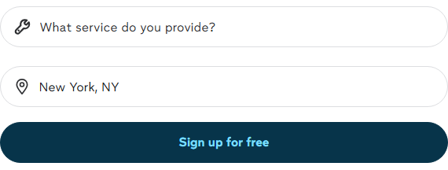
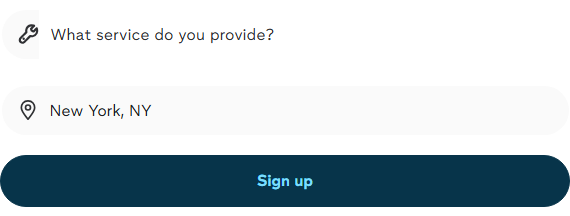
BUG-02: Mobile bar scroll
scrollToEl() now re-checks the target after the scroll settles and corrects up to 3 times. Section top sampled every 250ms after tapping the button:
Chrome mobile : 495, -128, -215, -15, 0, 0, 0 … Safari mobile : -214, -214, 1, 1, 1 … Desktop (both): 0 / 1 throughout
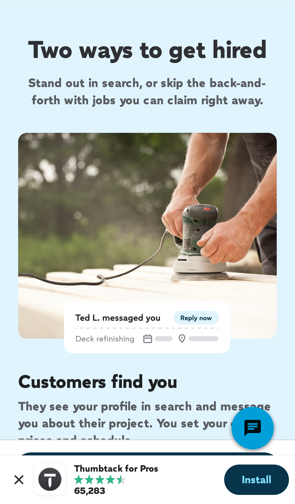
BUG-03: Section "Sign up for free"
The approach changed. The button no longer focuses the input directly. It scrolls to the hero and then clicks the visible hero "Sign up" button, re-queried after the scroll, so the detached-node problem is gone. The native form handles what happens next:
- Empty service field: the service input gets focus and its placeholder turns red (native validation). The URL doesn't change.
activeElement=INPUT "What service do you provide?"on all 4 combos. - Service already chosen in the hero: goes straight to
/pro/occupation/1?category_pk=…&zipcode=10118&rawSearchQuery=House%20cleaning, the same as submitting the hero.
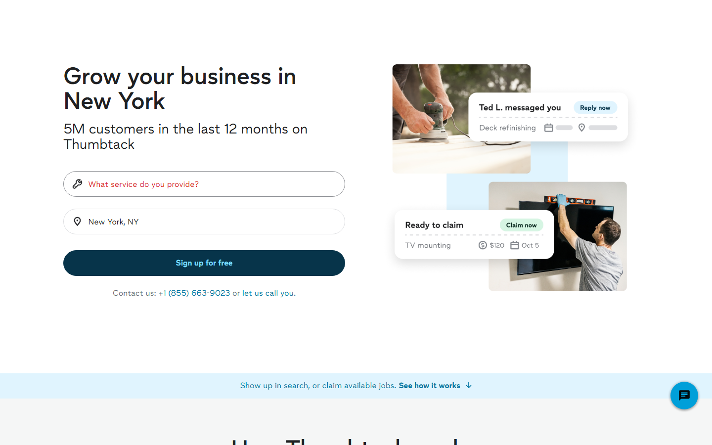
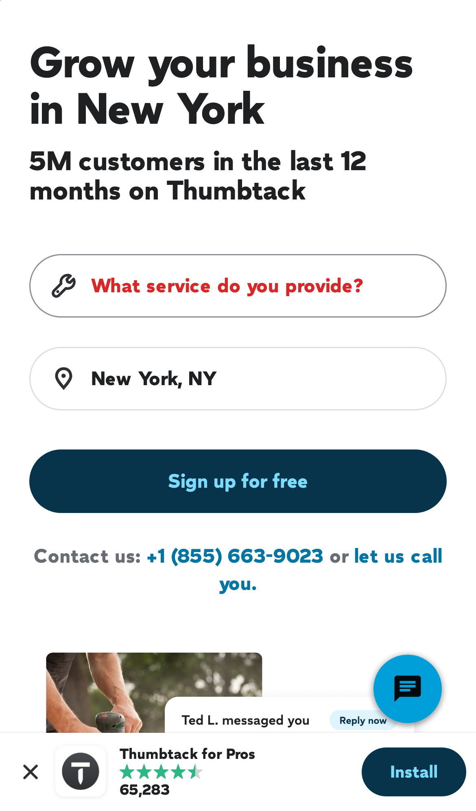
BUG-04: 1025–1095px overflow
The grid is now minmax(0,570px) minmax(0,540px) with a 48px gap, and the cards use flex: 0 1 467px. At 1025 the columns are 465/465 and the cards 465/465, with no overflow.
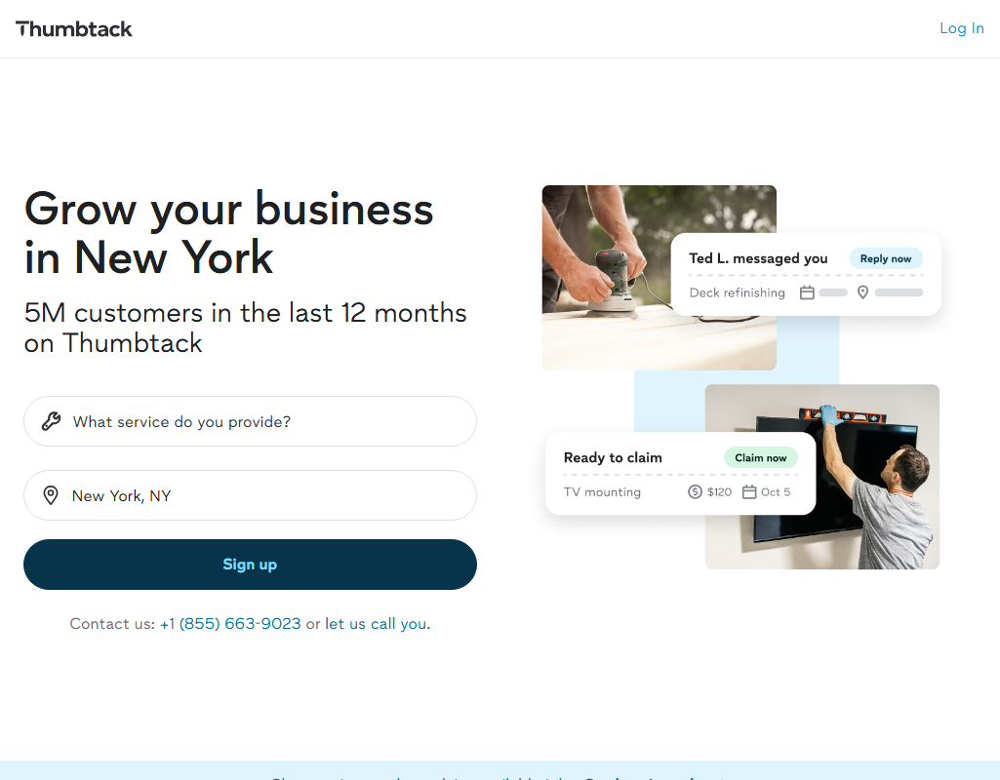
Questions for the client
Q-03 (new): The section CTA programmatically clicks the hero "Sign up" button. Is that OK for goal tracking?
The new code calls button.click() on the hero CTA. That dispatches a real click event (captured as untrusted, isTrusted=false), so any Optimizely or analytics goal bound to the hero Sign up button also fires when the user clicked the section button. That inflates hero-CTA clicks in the variation compared with the control. If hero-CTA clicks are a goal, either exclude synthetic clicks or add a dedicated event for the section CTA (also relates to round-1 L-03: no custom events yet).
Q-01 (carried over): Desktop vs Mobile wireframe copy
Still unanswered. The build uses the "Desktop Web" copy ("Two ways to get hired / Customers find you / Claim available jobs") on every device.
Note on the new images: the swapped hero and card images now carry different overlay copy from the wireframe. Wireframe: "Deck refinishing · Send a quote · Set your price · Sarah K. · Greenpoint" and "Tv mounting · Free to claim · $120 · Woodside · Oct 5". New images: "Ted L. messaged you · Reply now · Deck refinishing" with grey placeholder bars, and "Ready to claim · Claim now · TV mounting · $120 · Oct 5". You said the images were changed on purpose, so this is recorded as info, not a bug. Please confirm the grey placeholder bars in the "Ted L." card are intended rather than an unfinished export.
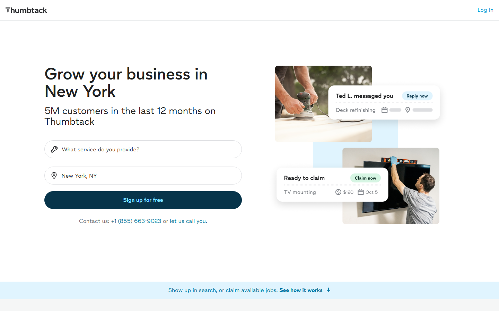
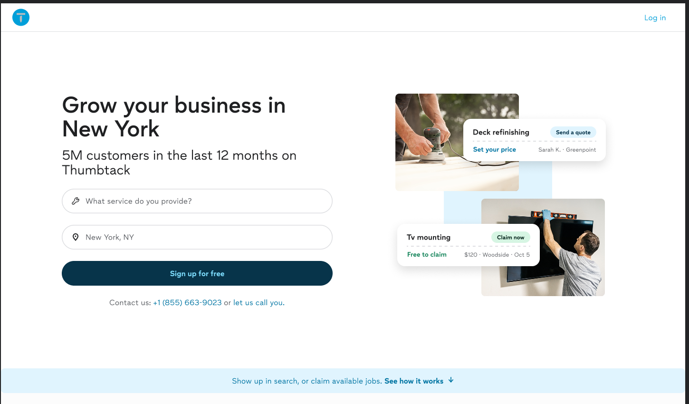
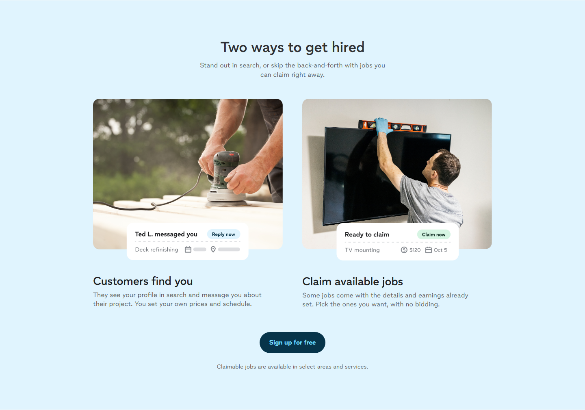
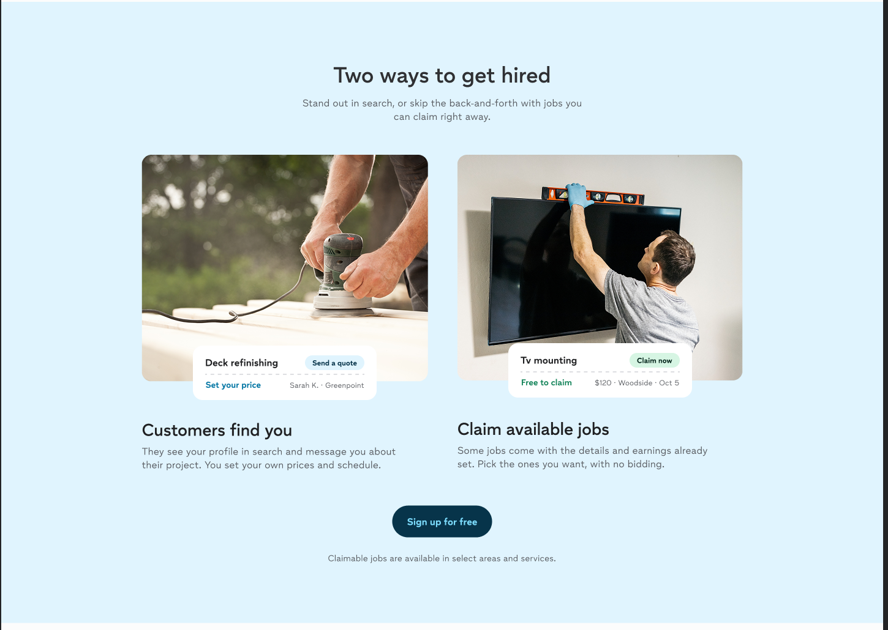
Q-02 (carried over): Overlapping /pro experiments
Still applies. When the CTA-copy experiment 6405370246070272 is also active, the hero button reads "Sign up" while the section reads "Sign up for free" (seen in this run at 1025px and on Safari iPhone 12).
Low / notes
- L-01 (new): The mobile bar scroll is fixed, but the correction is visible: the page first stops ~215px past the title, holds there for ~0.25–0.5s, then glides back up. It's cosmetic. Removing it fully would need the native element that collapses on scroll to be accounted for before scrolling starts.
- L-02 (new): Only "See how it works" is a button now. The rest of the bar text ("Show up in search, or claim available jobs.") is no longer clickable (desktop text click: no scroll). Semantically this is better, but the tap target on mobile is smaller than in round 1. Fine if intended.
- L-03 (new): With an empty service field, the section CTA ends on a red "error" placeholder. That's native validation, but a user who simply clicked "Sign up for free" might read it as an error rather than a prompt. Low; for the client's awareness.
- Carried: On desktop the native sticky bottom search bar still covers the section CTA when the CTA sits in the bottom ~130px of the viewport (native). The no-geo H1 risk is unchanged. Console noise is the same as round 1 (stale exp 5870164508409856, React #418, Genesys/Branch/Bing CORS), none of it from this variation.
Screenshots
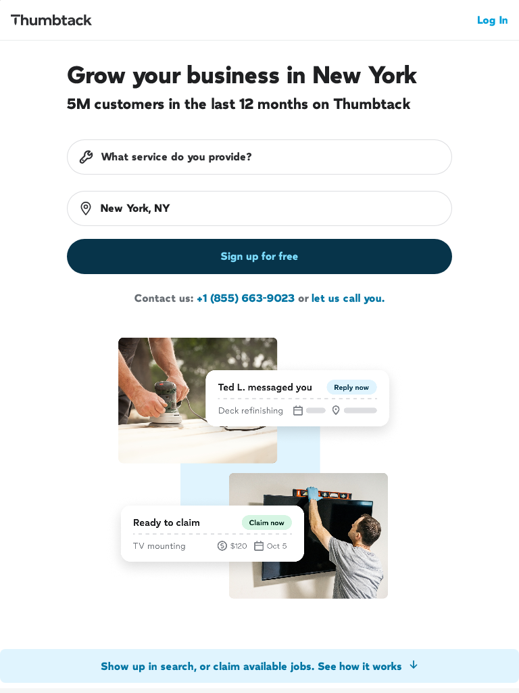
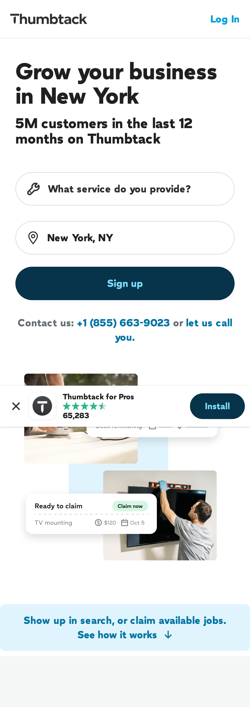
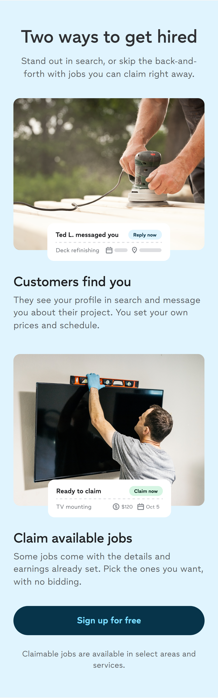
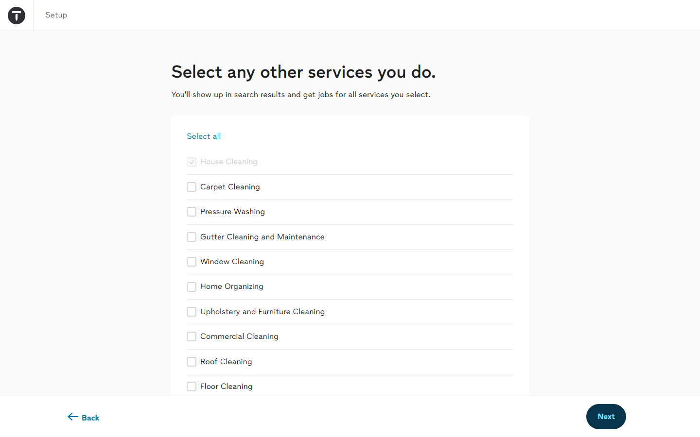